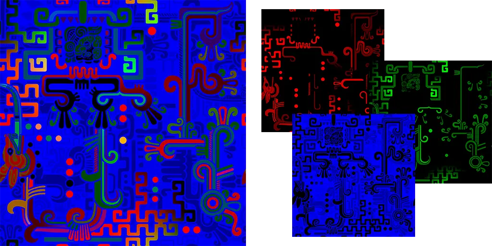

Once we became more familiar with the types of modes Facepunch was building s&box to accommodate, we moved our attention to building an FTL-inspired multiplayer experience where players work together to maintain and upgrade a spaceship. Each system you visit has any number of random encounters; friendly traders, distress beacons or even pirates that want your ship and won't be taking "no" for an answer.
TTT
We had this idea for a Garry's Mod TTT server with a twist — players would be able to open crates to obtain weapons of different rarities that could be equipped in their inventory so that they spawn with them at the beginning of every round of the game they play. These weapons would have levels which could be increased via the use the weapons. By increasing the level of the weapon to certain points, “milestones” would be unlocked that added additional abilities to the weapon. The stats of these abilities would be random values set when the weapon item was first created (unboxed).
Unfortunately, we don't have limitless resources to provide for ourselves while we work on our projects, and — subsequently — we require some form of income in order to keep the project going. We dislike as much as anyone the careless and greedy monetization of opportunity in modern video games, so we wanted to make a system where people did not feel like they had to contribute toward our server upkeep fees but would be fairly rewarded if they did choose to do so, without making the game unfair to those who didn't. Before even starting the project we fleshed out a basic idea of how we wanted to market donator perks on our server.
| Donator <$5 |
Supporter $5 |
Premium $15 |
Elite $25 |
|
|---|---|---|---|---|
| Support Us | ✔ | ✔ | ✔ | ✔ |
| Chat Prefix | ✔ | ✔ | ✔ | ✔ |
| Start Votekicks | ✘ | ✔ | ✔ | ✔ |
| Start Votebans (30 min) |
✘ | ✘ | ✔ | ✔ |
| Weekly Credits | 0.5x | 1x | 2x | 5x |
| Instant Credits | 1x | 5x | 10x | 25x |
Of the systems we did manage implement in the many months we were actively working on this project, several of them were in a state worth sharing. Among these were the inventory/equipment system, the procedural weapon decal/skinning system and the task system (albeit buggy).
In the case of the inventory system, Thomas was greatly responsible for the back end framework that made it work, while I took charge by helping where I could as well as crafting a unique front end as best as I knew how. Many custom UI elements were created to get the result that we wanted. The assets for the cosmetics were also ripped from other games to appeal to individuals that may have played them.
The procedural weapon skinning system was very likely my most favorite piece of work in the entire project. I ripped many textures of patterns meant for skinning weapons from Counter-Strike: Global Offensive (CS:GO) that were each single textures composed of three channels such that they could be separated and colored to create a final pattern to be overlayed upon the weapon. Here is an example of one of these textures aside its three RGB channels, extracted from the directory "materials/models/weapons/customization/paints/" within the game's VPK files:

I precomputed the split channels of each pattern, discarding their source texture and holding on to just the channels for in-game applications (in retrospect, not the best decision for disk space or download times). In-game, players could obtain skin items that were given three randomly generated colors at the time of their creation. When the skin was applied to a weapon, the skin item was deleted and its information passed onto the weapon item for saving within our database. Weapons with skin information saved within their properties called upon the weapon skinning module I created to network instructions regarding skins to clients for building a new textures entirely within the client's memory based on data from the disk. These "temporary" textures were used in the inventory as thumbnails as well as rendered additively atop both the weapon's view model and world model textures for a single frame, the resulting overlayed texture saved to memory and applied to those model instances for all clients.
The last system we created that I've got a reasonably good video clip of was the task system. At the beginning of each round, all non-Traitor players were assigned 5 tasks around the level, each with their own form of minigame that needed to be completed. Upon the completion of all five of a player's tasks, a random reward picked from an arbitrary loot pool was given to the player as an incentive to complete more tasks in the future. The task system was most likely the least stable system we had in place during the project, spending most of its time manually disabled for playtesting. The structure I built this system to support was not future-proofed to any degree, and as such was more of an obstacle at times than it was a tool.
In the end, the project's downfall was our inability to keep interest in it due to virtually no one playing on it other than the times I devoted all my resources exclusively to getting a few people to hop on for an hour. Garry's Mod has been around for quite some time and has become fairly oversaturated with variety, making it nearly impossible for anyone to discover anything truly new in the environment. We're still fairly proud of the things we accomplished during the 6 months or so we were working on this project. We'll likely be releasing the source code for it on the off chance anyone wants to learn how we accomplished some of the things we did.